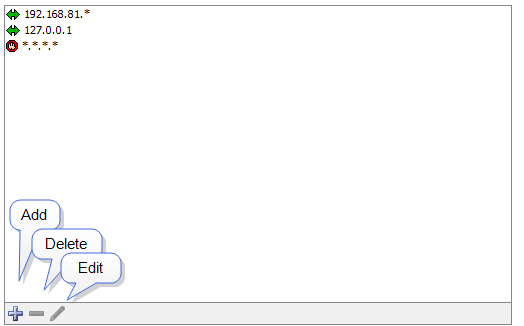

Configuring a Firewall
For each built-in server, the Firewall list shows all the addresses that
are allowed to connect or are blocked:

-
If an incoming address matches an Allow address (or range), the connection
is allowed.
- If the incoming address matches a Deny address, the connection is
dropped.
- Firewall definitions are checked against the incoming address in the order
in which they appear.
Changing the order of a firewall definition
Firewall definitions are applied in the order in which they appear. You can
change the order of the definitions after you have created them.
To move a firewall definition to a different position in the list:
-
Click and drag the firewall definition to the new position.
Entering Address Ranges
You can enter addresses in the access control list in three different formats:
- Fully-specified IP addresses
Example: 192.168.1.10
- Address ranges
Example:192.168.1.1-31. This
specifies any device in the range 192.168.1.1
to 192.168.1.31.
- Addresses with a "*" wildcard Each wildcard corresponds to a range
of 0-255.
Example: 192.168.1.* (equivalent to 192.168.1.1-255)
Example: 192.168.*.* (Class B range)
Example: *.*.*.* ("all addresses")
Tip:
To deny access to certain addresses, add them at the top of the
list and set the Access attribute to "Deny".
For a description of the Access Control process and the rules InterMapper uses
to determine whether a user should be allowed to connect to an InterMapper server,
see the Server Access Control page.